| FANUC18iM数控系统操作 |
系统操作键盘在视窗的左下角，如下图所示 :
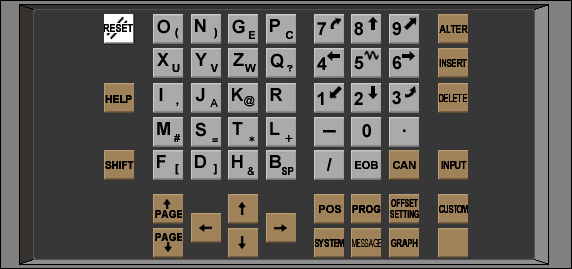
FANUC 18i ( 铣床 ) 面板
数字 / 字母键
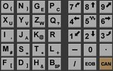
数字 / 字母键用于输入数据到输入区域（如下图所示），
组合键中的大小写字母键通过 键切换输入，如： X ― u ， Y ― v 。
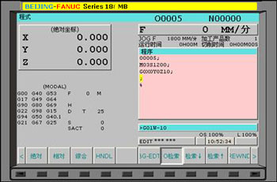
FANUC 18i-M( 铣床 ) 数字及符号输入
编辑键
替换键 用输入的数据替换光标所在的数据。
删除键 删除光标所在的数据；或者删除一个程序或者删除全部程序。
插入键 把输入区之中的数据插入到当前光标之后的位置。
取消键 消除输入区内的数据。
回车换行键 结束一行程序的输入并且换行。
上档键
页面切换键
程序显示与编辑页面。
位置显示页面。位置显示有三种方式（绝对 / 相对 / 综合）。
参数输入页面。
系统参数页面
信息页面，如“报警”
图形参数设置页面
系统帮助页面
复位键
翻页按钮（ PAGE ）
向上翻页。 向下翻页。
光标移动（ CURSOR ）
向上移动光标。 向左移动光标。
向下移动光标。 向右移动光标。
输入键
输入键 把输入区内的数据输入参数页面。
• 回参考点
(1) 置模式旋钮在
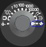
位置。(2) 选择各轴 , 按住按钮 , 即回参考点。
• 移动
手动移动机床轴的方法有三种：
• 方法一：快速移动 ，这种方法用于较长距离的工作台移动。
(1) 置“ JOG ”模式
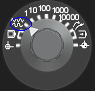
位置：(2) 点击各轴正负方向按钮，机床各轴移动，松开后停止移动。例如：单击 按钮，机床向 X 轴正方向移动；单击 按钮，机床向 X 轴负方向移动。
(3) 按 键，各轴快速移动。
• 方法二：增量移动
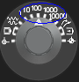
，这种方法用于微量调整，如用在对基准操作中。(1) 置模式在 位置： 选择 1 、 10 、 100 、 1000 、 10000 步进量
(2) 选择各轴，每按一次，机床各轴移动一步。
• 方法三：操纵“手脉” ，这种方法用于微量调整。在实际生产中，使用手脉可以让操作者容易控制和观查机床移动。“手脉”在软件界面右上角 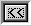
• 开、关主轴
(1) 置模式旋钮在“ JOG ”位置
(2) 按 
 机床主轴正反转，按
机床主轴正反转，按  主轴停转
主轴停转
• 启动程序加工零件
(1) 置模式旋钮在“ AUTO ”位置
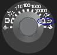
(2) 选择一个程序 ( 参照下面介绍选择程序方法 )
(3) 按程序启动按钮 
• 试运行程序
试运行程序时，机床和刀具不切削零件，仅运行程序。
（ 1 ）置在 模式
（ 2 ）选择一个程序如 O0001 后按 调出程序
（ 3 ）按程序启动按钮 
• 单步运行
（ 1 ）置单步开关 于“ ON ”位置
（ 2 ）程序运行过程中，每按一次 执行一条指令
• 选择一个程序
有二种方法进行选择：
i. 按程序号搜索
(1) 选择模式放在“ EDIT”
(2) 按 键 再按 输入字母“ O ”
(3) 按 键输入数字“ 3 ”，输入搜索的号码：“ 03 ”
(4) 按 CURSOR ： 开始搜索；找到后，“ O3 ”显示在屏幕右上角程序号位置，“ O3 ” NC 程序显示 在屏幕上。
ii. 选择模式 AUTO 位置
(1) 按 键入字母“ O ”
(2) 按 键入数字“ 3 ”，键入搜索的号码：“ 03 ”
(3) 按 →
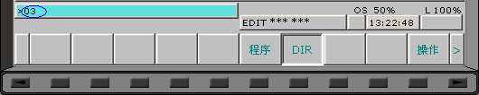
→ “ O3 ”显示在屏幕上。(4) 可输入程序段号“ N30 ”，按 或 搜索程序段。
• 删除一个程序
• 选择模式在“ EDIT ”
• 按 键输入字母“ O ”
• 按 键输入数字“ 3 ”，输入要删除的程序的号码：“ 03 ”
• 按 “ 03 ” NC 程序被删除
• 删除全部程序
• 选择模式在“ EDIT ”
• 按 键输入字母“ O ”
• 输入“ -9999 ”
• 按 全部程序被删除
• 搜索一个指定的代码
一个指定的代码可以是：一个字母或一个完整的代码。例如：“ N0010 ”，“ M ”，“ F ”，“ G03 ”等等。搜索应在当前程序内进行。操作步骤如下：
• 在 “ AUTO ” 或 “ EDIT ”
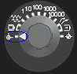
模式• 按
• 选择一个 NC 程序
• 输入需要搜索的字母或代码，如：“ M ”，“ F ”，“ G03 ”
• 按
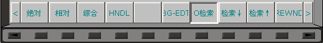
中的“ 检索 ” ，开始在当前程序中搜索。
• 编辑 NC 程序（删除、插入、替换操作）
• 模式置于“ EDIT ”
• 选择
• 输入被编辑的 NC 程序名如“ 0 2 ”，按 即可编辑。
• 移动光标：
• 方法一：按 PAGE ： 或 翻页，按 CURSOR ： 或 移动光标。
• 方法二：用搜索一个指定的代码的方法移动光标。
• 输入数据：用鼠标点击数字 / 字母键，数据被输入到输入域。 键用于删除输入域内的数据。
• 自动生成程序段号输入：按 →  ，在参数页面顺序号中输入“ 1 ”，所编程序自动生成程序段号。 ( 如： N10 … N20 … )
，在参数页面顺序号中输入“ 1 ”，所编程序自动生成程序段号。 ( 如： N10 … N20 … )
删除、插入、替代：
按 键，删除光标所在的代码
按 键，把输入区的内容插入到光标所在代码后面。
按 键，把输入区的内容替代光标所在的代码。
• 通过操作面板手工输入 NC 程序
• 置模式开关在“ EDIT ” 。
• 按 键，再按 进入程序页面。
• 按 输入“ O 3 ” 程序名 ( 输入的程序名不可以与已有程序名重复 ) 。
• 按 → 键，开始程序输入。
• 输入完一程序段后， 按 → 键换行后再继续输入。
• 从计算机输入一个程序
NC 程序可在计算机上建文本文件编写，文本文件 (*.txt) 后缀名必须 改 为 *.nc 或 *.cnc 。
• 选择 EDIT 模式，按 键切换到程序页面
• 新建程序名“ Oxxxx ”按 进入编程页面
• 按  打开计算机目录下的文本文件，程序显示在当前屏幕上
打开计算机目录下的文本文件，程序显示在当前屏幕上
• 输入零件原点参数
• 按 键进入参数设定页面，按“坐标系”。
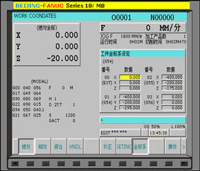
FANUC 18 i-M( 铣床 ) 工件坐标系页面
• 用 或 选择坐标系。
输入地址字（ X/Y/Z ）和数值到输入域。方法参考“输入数据”操作。
• 按 键，把输入域中间的内容输入到所指定的位置。
• 输入刀具补偿参数
• 按 键进入参数设定页面，按“ ”
• 用 和 键选择长度补偿 , 半径补偿
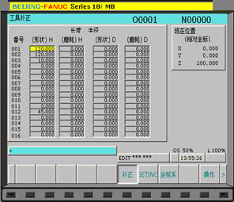
FANUC 18 i-M( 铣床 ) 刀具补正页面
• 用 CURSOR ： 和 键选择补偿参数编号。
• 输入补偿值到长度补偿 H 或半径补偿 D 。
• 按 键，把输入的补偿值输入到所指定的位置。
• 位置显示
按 键切换到位置显示页面。用 和 键或者软键切换。
• MDI 手动数据输入
• 按
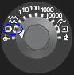
键，切换到“ MDI ”模式• 按 键，再按 → 分程序段号“ N10 ”，输入程序如： G0X50
• 按 “ N10G0X50 ” 程序被输入
• 按  程序启动按钮。
程序启动按钮。
• 镜像功能
• 按 →  →
→
• 在参数页面中 MIRROR IMAGE X 、 MIRROR IMAGE Y 、 MIRROR IMAGE Z 分别表示 X 轴、 Y 轴和 Z 轴镜像功能。
• 如输入“ 1 ”镜像启动。
• 零件坐标系（绝对坐标系）位置
绝对坐标系：显示机床在当前坐标系中的位置。
相对坐标系：显示机床坐标相对于前一位置的坐标。
综合显示：同时显示机床在以下坐标系中的位置。
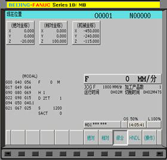
FANUC 18 i-M( 铣床 )
绝对坐标系中的位置（ ABSOLUTE ）
相对坐标系中的位置（ RELATIVE ）
机床坐标系中的位置（ MACHINE ）
当前运动指令的剩余移动量（ DISTANCE TO GO ）